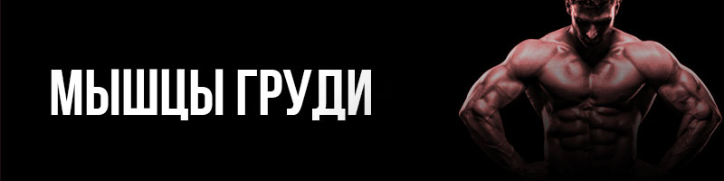
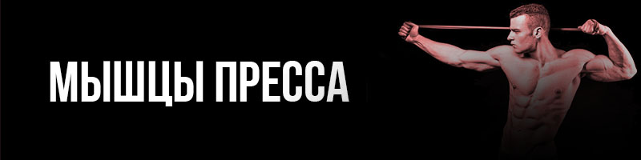
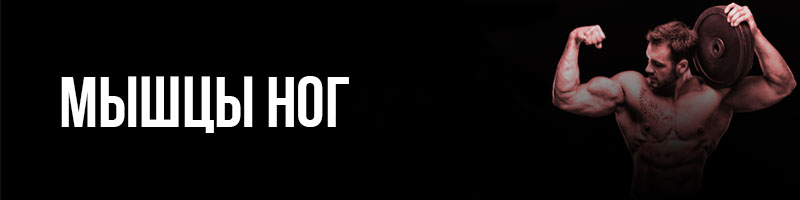

МЫШЦЫ ГРУДИ И СПИНЫ ОЧЕНЬ ВАЖНЫ ЧЕЛОВЕКУ. У ДЕТЕЙ ИЗ-ЗА СИДЯЧЕГО ОБРАЗА ЖИЗНИ МОЖЕТ РАЗВИТЬСЯ СКОЛИОЗ. И ЧТОБЫ ИЗБЕЖАТЬ ДАЛЬНЕЙШИХ ПОСЛЕДСТВИЙ
СТОИТ УСИЛИТЬ МЫШЕЧНЫЙ КАРКАС. ЧТОБЫ ПОЗВОНОЧНИК ВЫПРЯМИЛСЯ С ПОМОЩЬЮ НАРАЩИВАНИЯ МЫШЦ. ПРАВИЛЬНЫЕ ТРЕНИРОВКИ ПОМОГУТ И ВЗРОСЛЫМ ЛЮДЯМ ИЗБАВИТЬЯ ОТ БОЛЕЙ В СПИНЕ ВЫПРЯМИТЬ
ОСАНКУ И ИЗБАВИТЬСЯ ОТ ВИСЯЩЕЙ ГРУДИ.

МЫШЦЫ ПРЕССА ИЛИ ИНАЧЕ НАЗЫВАЕМЫЕ МЫШЦЫ КОРА И НИЖНИЕ МЫШЦЫ СПИНЫ ВСЕГДА БЫЛИ СИЛЬНЫМ ОРУЖИЕМ КАК У МУЖЧИН И ЖЕНЩИН. НАШИ ТРЕНЕРА РАЗРАБОТАЛИ
СПЕЦИАЛЬНУЮ МЕТОДИКУ, КОТОРАЯ ВКЛЮЧАЕТ В СЕБЯ СИЛОВЫЕ И КАРДИО ТРЕНИРОВКИ И СОН, КОТОРАЯ ПОМОЖЕТ ВАМ ЗА НЕСКОЛЬКО НЕДЕЛЬ УБРАТЬ ЛИШНИЙ ВЕС И ОБЗАВЕСТИСЬ КРАСИВЫМИ КУБИКАМИ НА ТЕЛЕ

ОДНИ И САМЫХ ВАЖНЫХ И СИЛЬНЫХ МЫШЦ ЯВЛЯЮТСЯ МЫШЦЫ НОГ. ОДНАКО МНОГИЕ ПРИ ЗАНЯТИИ ФИЗИЧЕСКИМИ НАГРУЗКАМИ ИГНОРИРУЮТ ИХ. ОЧЕНЬ ВАЖНО ЧТОБЫ ВО ВРЕМЯ ТРЕНИРОВОК
РАБОТАЛИ ВСЕ МЫШЦЫ, ЧТОБЫ ТЕЛО БЫЛО В БАЛАНСЕ. ТРЕНИРОВКИ НА МЫШЦЫ НОГ, ТАКЖЕ ПОДНИМУТ ВАШУ ВЫНОСЛИВОСТЬ ЧТО УБЕРЕТ ОТДЫШКУ И ПОЗИТИВНО СКАЖЕТСЯ НА ВАШЕЙ ПОВСЕДНЕВНОЙ ЖИЗНИ.